Kidsync
A care-management platform that helps families of children with special healthcare needs hand off care safely — and stay protected even from afar.
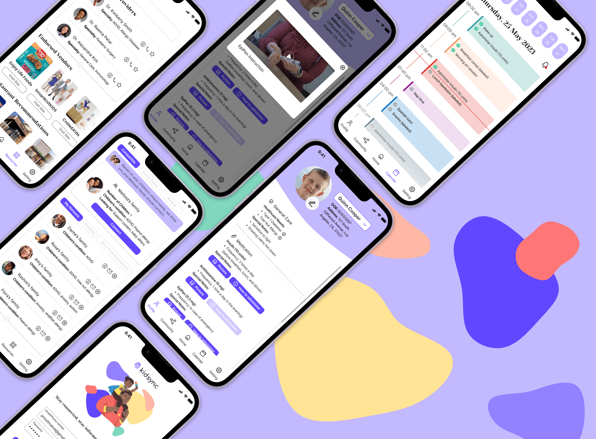
A nine-month "Shark Tank" for product
This was the capstone of Northwestern's Master of Product Design & Development Management (mpd²) program. Over nine months, professionals from different fields team up to design and pitch a disruptive product to a panel of judges and VC investors. It demands critical thinking, strategic planning, cross-functional collaboration, and persuasive communication — end to end.
Elliot couldn't breathe
Elliot reached for his babysitter as he gasped for air. He was four, had a severe peanut allergy, and was unintentionally given a Butterfinger. In the panic, his babysitter failed to administer an EpiPen on the way to the ER. He made it just in time. Luckily, he's now a bright eight-year-old. However, that day changed his parents forever.
How parents communicate care today — and why it breaks
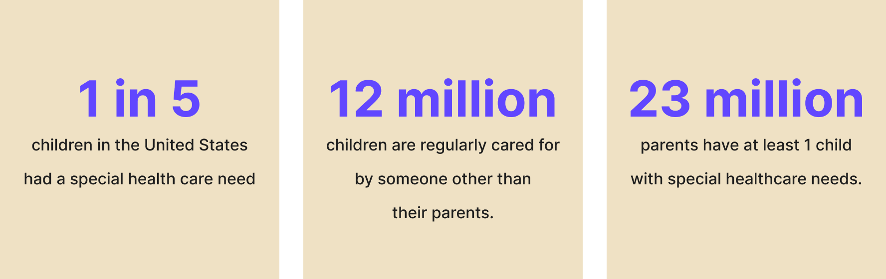
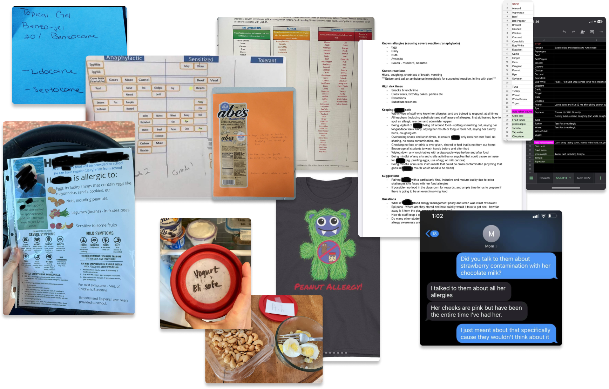
Printed instructions (Unorganized Information)
Printed instructions are often overwhelming, and most importantly, not accessible enough in a time of emergency.
Digital documents (Medium & Communication Gap)
While digitalized instructions are slightly more accessible, caretakers have a hard time diligently obliging because of their passive and unintuitive nature.
Anxiety-driven communication (State of panic)
This anxiety-driven approach is often perceived as micro-managing, harming the long-term relationship between the permanent and temporary caretaker.
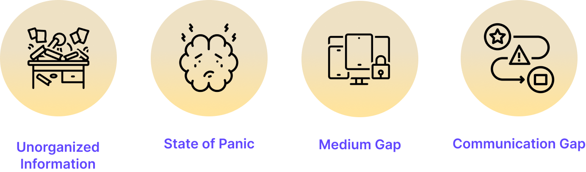
Understanding the problem before designing anything
User identification
Designers often make the mistake of cherry-picking personas that fit their agenda. To avoid this, I approached user research with a mix of consumer segmentation, user personas, and user journeys to ensure that our product addresses the correct issues for the right people and market.
Three parent segments emerged — DIYers, Tell-Show-Doers, and Reaction Managers — so the product had to work for both the highly prepared parent and the one who only arms caretakers for emergencies.
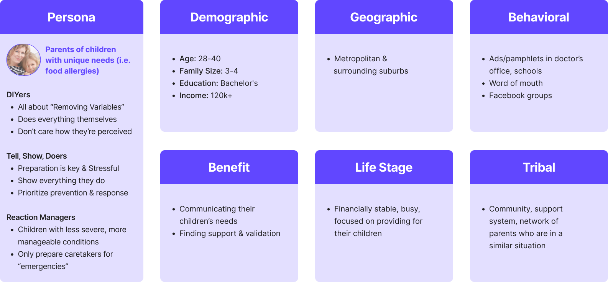
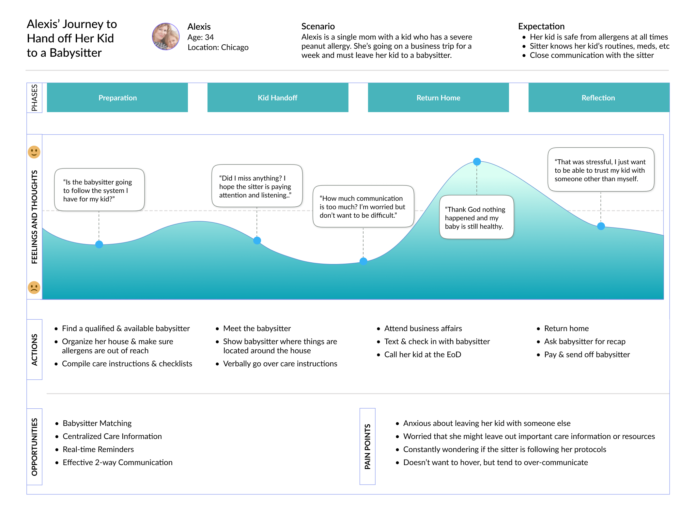
Preliminary interview
I defined the research objectives, scripted the guide, ran interviews via Dscout, and synthesized the findings to:
- Validate or challenge our assumptions about user needs
- Surface friction through product walkthroughs
- Gauge interest and willingness to pay
- ⭐️ Proactive measures
- ⭐️ Peace of mind
- ⭐️ Effective communication
- 🔑 When parents entrust their children to someone else for a period of time
- 🔑 When an emergency happens but parents can't make it back in time
- 🔑 When there are specific events or routines that need to be executed
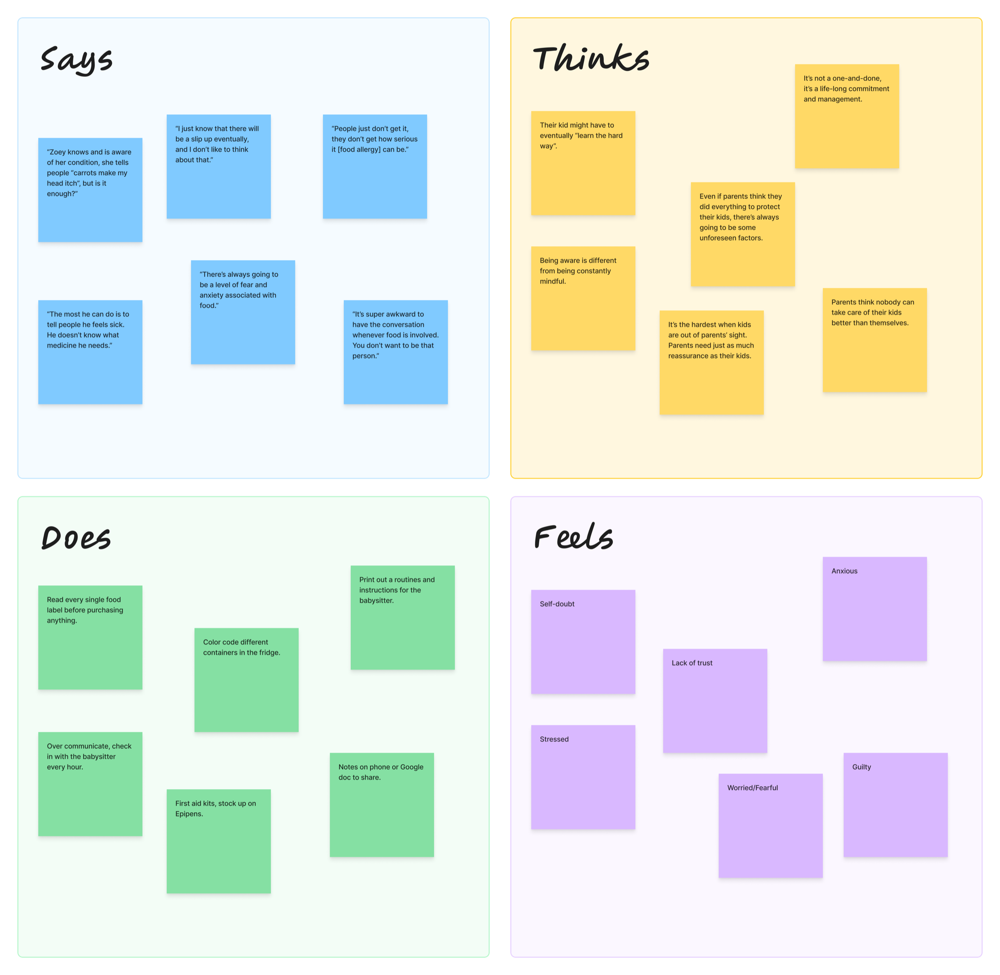
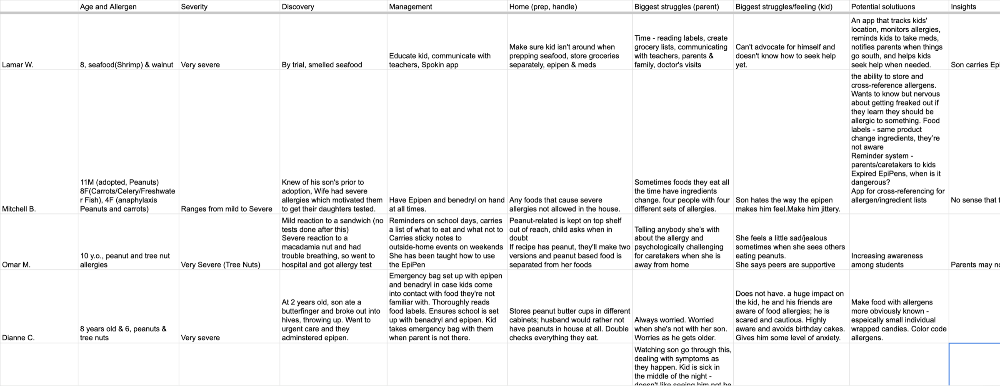
From insight to lead concept
We mapped the full problem space around childhood allergies — Education, Prevention/Detection, Advocacy, and Treatments — then used an opportunity map to evaluate dozens of concepts across desirability, feasibility, and viability before landing on the lead concept.


No one owns all three functions
We mapped the competitive landscape across three dimensions — real-time interactivity, shared access, and profile management — and found most apps covered only one or two. Kidsync was positioned as the first to integrate all three.
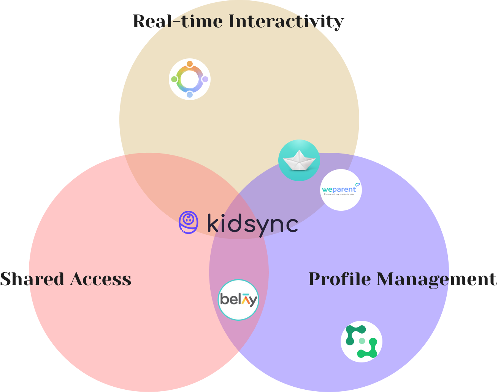
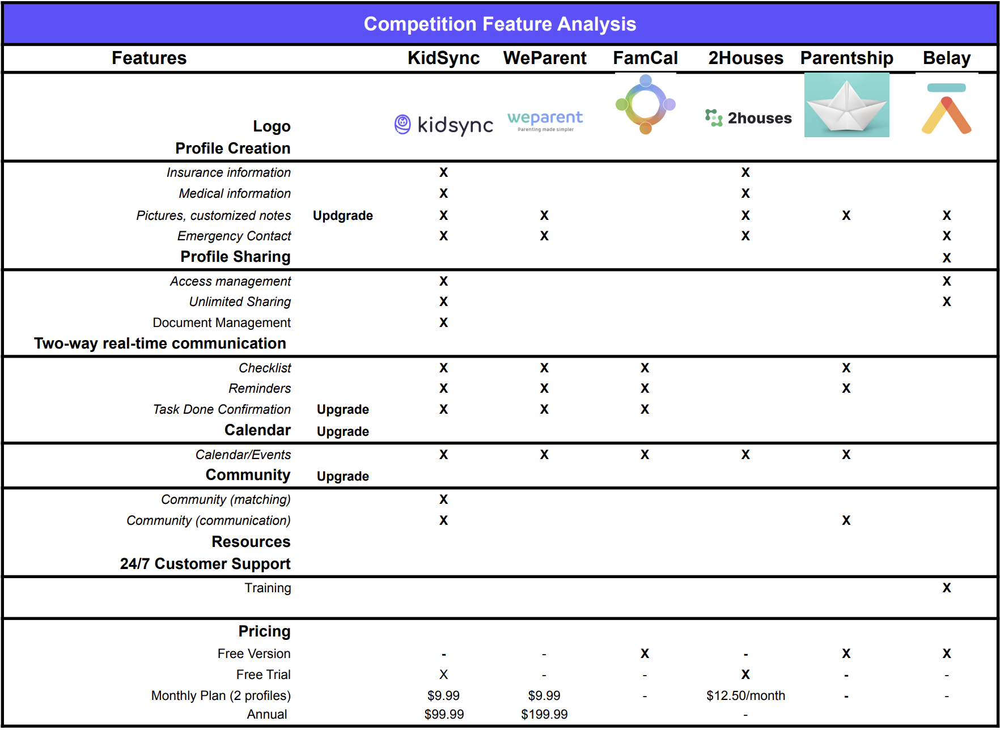
From storyboards to a shippable flow
I ran storyboarding sessions to explore every use case across different parent scenarios, then turned them into a prioritized user story backlog, a master user flow, and finally lo-fi wireframes that we tested and refined into high-fidelity screens.

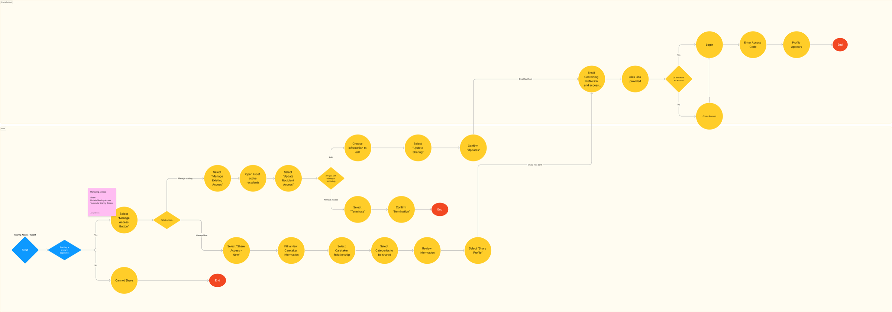
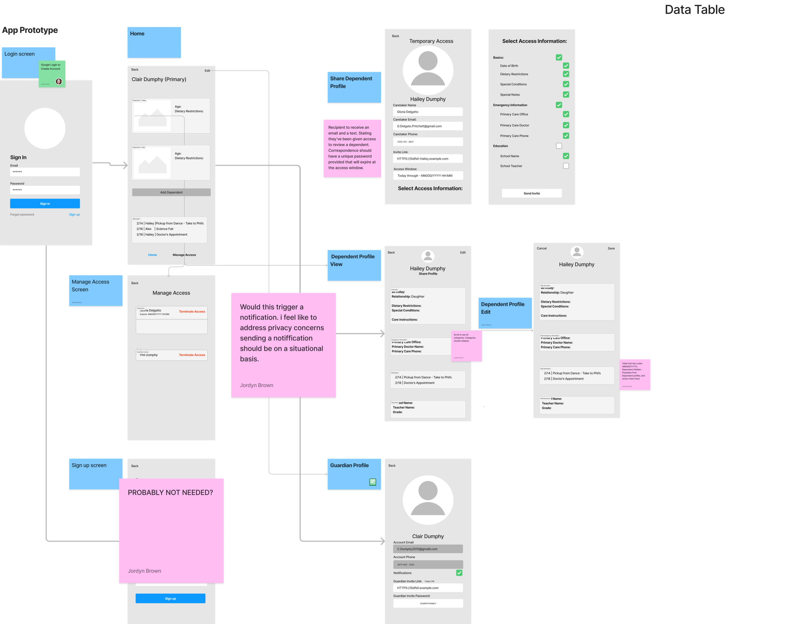
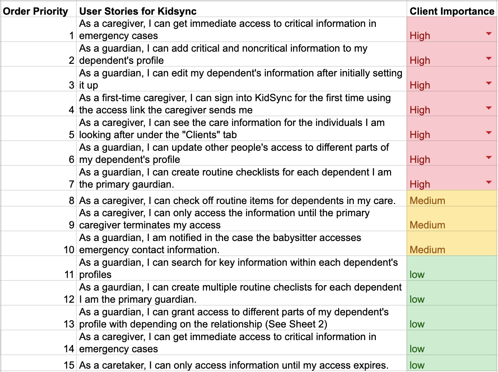
The product
Three capabilities map directly to the three things that broke in handoff today: information that wasn't reliable, confirmation that didn't reach the parent, and a support network that didn't exist.
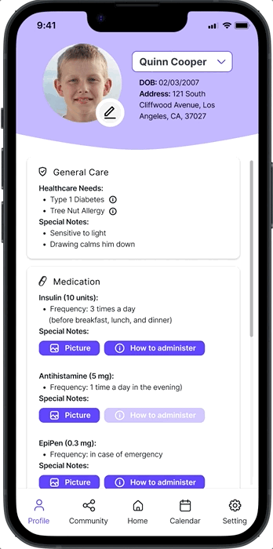
All-in-one care profile
Parents build a complete profile — conditions, medication instructions, documents, emergency contacts, and care tips. Authorized caretakers get everything at a glance, with media-rich medication guides they can follow under pressure instead of searching in an emergency.
Customizable medication guides & instant document access
Through media support, parents upload clear, easy-to-follow instructions for administering medication — so a caretaker can act quickly even in a state of panic. The same profile gives instant access to medical history, insurance, and vaccination cards, removing the stress of finding the right documents during a time-sensitive emergency.
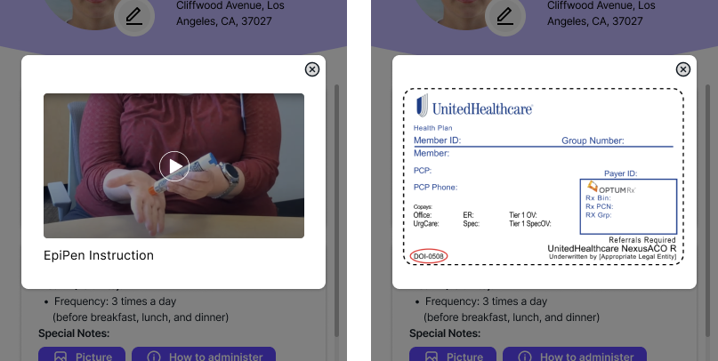
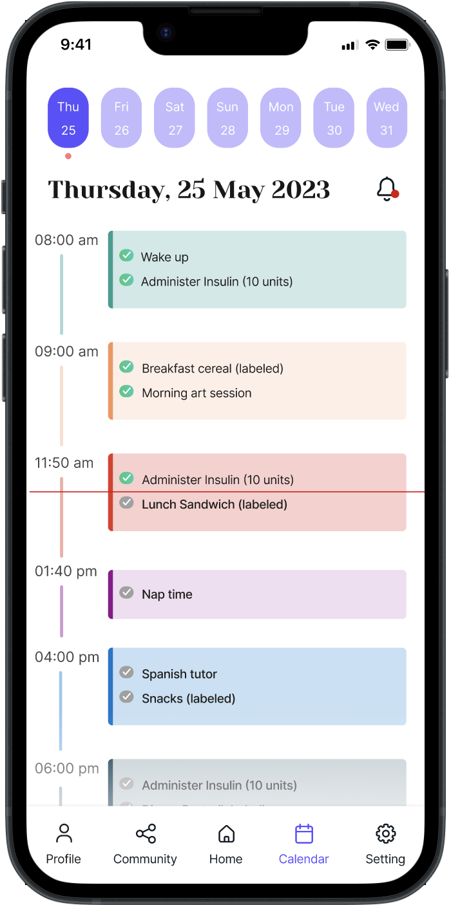
Interactive checklist with calendar
Caretakers check off time-based tasks and send real-time confirmation back to parents — closing the anxiety-driven communication gap without the parent having to chase updates.
Household matching & community
Kidsync connects households with similar care needs — matched on children's conditions, not just proximity — into a trusted network for support and babysitting, so parents stay connected and informed.
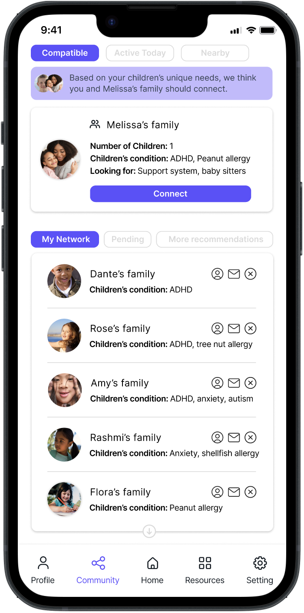
Three decisions that shaped the product
Refining the information hierarchy
The profile originally led with demographics and education, then care instructions, documents, and contacts. Research showed general care information matters most to babysitters in the moment, so we reordered the hierarchy and added media support for medication photos and video guides — putting life-saving instructions first.
Prioritizing mobile accessibility
We first imagined Kidsync as a web app because of its complex information architecture. User feedback said a web app wasn't immediate enough for real use cases — a panicked babysitter reaches for their phone, not a laptop. We pivoted to mobile-first.
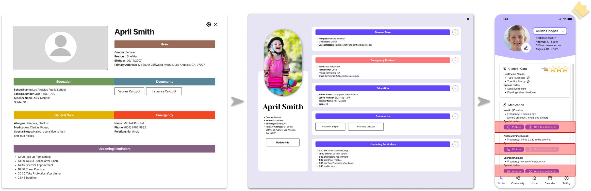
Enhancing data security
Some parents worried sitters might retain access after their duties ended. We added granular controls over the scope and duration of profile sharing — parents choose exactly which information categories a caretaker can see, and when their access expires automatically.
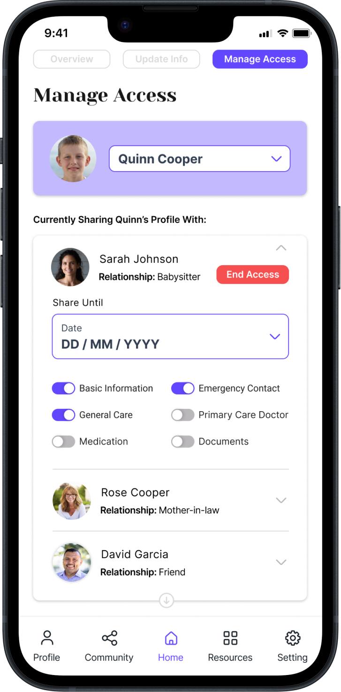
Users wanted it before it existed
After presenting the concept to parents in usability walkthroughs, the response went beyond positive feedback — people asked when it would be available and said they'd pay for it immediately. Unprompted reactions like these were the strongest signal of product-market fit we received.
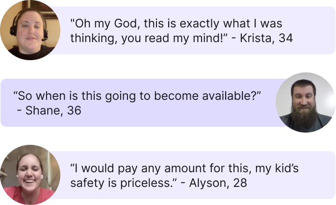
Kidsync took a complex, emotionally charged problem from primary research through segmentation, competitive analysis, and end-to-end product design — and arrived at a focused concept users wanted before it existed. The hardest call wasn't visual; it was narrowing a broad "childhood allergy" space down to the single handoff moment where design had the most leverage.
Where Kidsync goes from here
The near-term focus is launching, scaling, and growing a B2C base around families of children with special healthcare needs. From there, the platform's architecture opens naturally to pet care and elderly care, and ultimately a B2B move — partnering with care facilities, schools, and hospitals to become a comprehensive care-management platform.